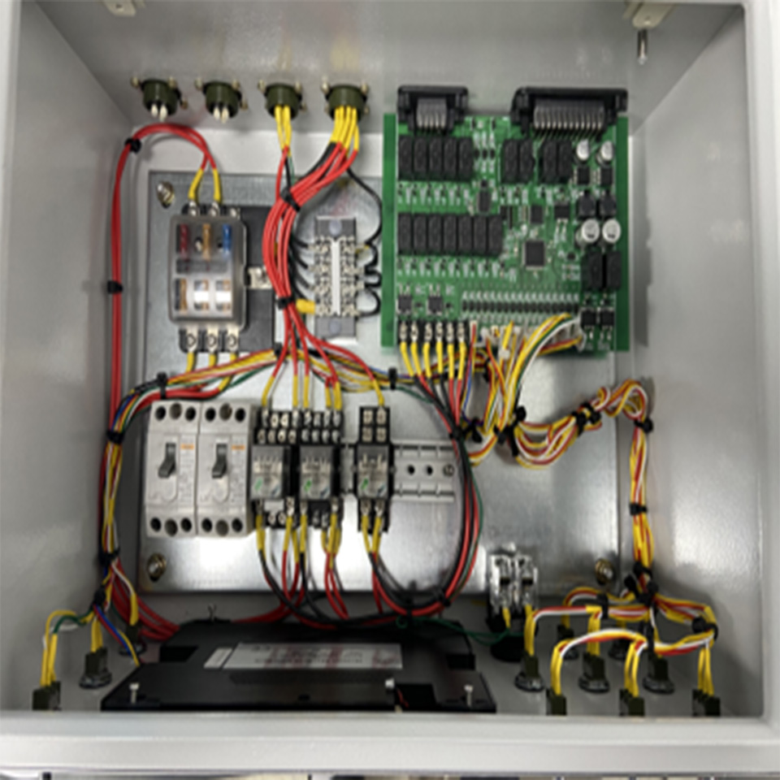

The product is designed to connect with the vehicle's ECU, enabling functions
like toggling the vehicle's ignition On/Off and activating features such as RPM
UP, DOWN, and PTO using toggle switches. Additionally, these functions can be
controlled using specific switches on the remote control.
Through a touch-screen display, real-time monitoring of sensor values during
vehicle operation is possible. It also offers the capability to detect sensor
anomalies and modify sensor parameter values. These adjusted parameters are
stored in the EEPROM for future reference. Moreover, the EEPROM is programmed to
automatically retrieve stored parameters upon powering on.
Human Machine Interface
&
ECU Controller
aerial work platform truck system

Before hardware design, I analyzed the characteristics of sensors required for
the system and the features of the system controlled through PCB connections. I
identified the necessary requirements for communication protocols and interfaces
such as CAN, I2C, GPIO, and USART, and incorporated them into the
design.
CAN : I established the CAN communication connections for data
exchange with other controllers.
I2C : Utilizing I2C communication, I integrated an ADC module
with 16-bit resolution.
GPIO : Designed considering the number of ports required for
sensors and external devices.
USART : Implemented communication with the touch-screen
display.
In addition, the system can receive input from external toggle switches via
GPIO. It reads the status of external buttons attached to the toggle switches or
wireless remote, activating relays to send signals to the vehicle's ECU. This
allows functions such as ignition control (On/Off), RPM adjustments (UP/Down),
and activation of the Power Take-Off (PTO) feature.
A touch-screen display is integrated, enabling real-time monitoring of various
sensor states and adjustment of sensor settings.
Please note that the phrasing has been adjusted for clarity and smoothness.
The firmware development was conducted using Simulink, and custom S-Function
blocks in C language were developed for devices such as CAN, I2C, EEPROM, and
touch-screen displays, as needed.
The programming was divided into three main parts
Switch Input and Processing : Handling operations based on
switch input states.
CAN Communication : Communication with other connected
controllers.
Display : Displaying sensor values and allowing adjustment of
settings, providing
necessary information to the user.
These techniques were programmed and tested on the MCU using MATLAB and
Simulink.
I utilized Nextion's touch-screen display. I designed various screens using
Nextion's proprietary tool and implemented the ability to input passwords and
parameter values using provided commands.
I also designed buttons and screen
components using Photoshop (allowing for potential modifications in the future).
By mastering the basic tools and commands provided by Nextion, diverse display
configurations can be created. It's a product I personally recommend.